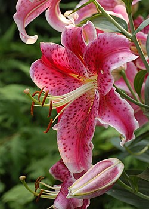

Lillium or Lilies

Lilium (lily) is a genus of herbaceous flowering plants growing from bulbs, all with large and often prominent flowers. Lilies are a group of flowering plants which are important in culture and literature in much of the world. Most species are native to the Northern Hemisphere and their range is temperate climates and extends into the subtropics. Many other plants have "lily" in their common names, but do not belong to the same genus and are therefore not true lilies. True lilies are known to be highly toxic to cats.The flowers are large, often fragrant, and come in a wide range of colors including whites, yellows, oranges, pinks, reds and purples. Markings include spots and brush strokes. The plants are late spring- or summer-flowering. Flowers are borne in racemes or umbels at the tip of the stem, with six tepals spreading or reflexed, to give flowers varying from funnel shape to a "Turk's cap". The tepals are free from each other, and bear a nectary at the base of each flower. The ovary is 'superior', borne above the point of attachment of the anthers. The fruit is a three-celled capsule.
Read more...
Types
Lilies offer style, elegance, fragrance, and a gorgeous pop of color for your landscaping needs. Seeing their stunning blooms in spring and summer is so wonderful!
Lilies are famous among various types of flowers, and there are almost a hundred species and hundreds more hybrids for your selection.
Choosing from among the many, many options of types of lilies flowers may be overwhelming, but this guide highlights the different types of lilies anyone can grow, with photos and their characteristics to make your job easier.
Lilies are famous among various types of flowers, and there are almost a hundred species and hundreds more hybrids for your selection. There are several different types of true lilies. The following are the most popular:
Asiatic Hybrids: have trumpet, bowl-shaped or turk’s cap flowers; bulbs should be spaced 45cm (18in) apart.
Martagon Hybrids: have turk’s cap-shaped flowers; spacing 30cm (12in).
Candidum Hybrids: have trumpet-shaped flowers whose petals are strongly reflexed; spacing 30cm (12in).
American Hybrids: have flowers that are mainly turk’s-cap shaped; spacing 45cm (18in).
Oriental Hybrids: can have trumpet-shaped, bowl-shaped, flat or recurved flowers; spacing 30-45cm (12-18in) depending on height.
Read more...
Other Types:
- Asiatic Lilies
- Oriental Lilies
- Orienpet Lilies
- Longiflorum Lilies
- Turk’s Cap Lilies
Why Are There Many Types of Lily Flowers?
Given the hundreds of hybrids and parent lily flower species, botanists have a simple system to help them identify and distinguish particular types. The plants are divided into nine divisions according to genes and mode of hybridization.
This way, professionals and gardeners can tell what the flowers look like, their bloom time and their favorable growing conditions. There are more subdivisions beneath the nine main divisions, and there are hundreds if not dozens of types of lilies flowers in each category.
Care
Planting lilies
Lily bulbs can be planted in autumn or in spring.
The planting depth depends on the type, as lilies can either be stem rooting or basal rooting; the former produce roots above the bulb as well as below, so need deeper planting. Generally, plant stem-rooting lilies 15-20cm (6-8in) deep and basal-rooting types 5-7.5cm (2-3in) deep.
As the bulbs like cool conditions, it’s a good idea to shade the base of the stems, such as by growing low-growing plants in front of them.
Most lilies are perfect for growing in containers – but the Asiatic, Oriental and Trumpet hybrids are particularly suitable for pot growing. Space the bulbs evenly, with at least 2.5-5cm (1-2in) between them. Use John Innes No 3 Compost. The bulbs can remain in the containers for several years, before they need removing and replanting.
How to look after and care for lilies
Apply a 5-7.5cm (2-3in) mulch over the soil after planting, and top it up annually. Outdoor lily plants growing in the ground may not need watering at all, but check during prolonged dry periods in summer. Those in containers will need regular watering whenever needed in spring and summer.
Feed with a slow or controlled-release feed in spring and apply liquid feeds through the growing season – especially when they’re in flower.
Although most lilies produce stout stems that can tolerate strong winds, it pays to stake those growing taller than 90cm (3ft) wherever wind is a problem.
When the flowers have faded, remove them and developing seed pods. Keep the plants growing strongly after they have finished flowering – a weekly liquid feed is beneficial – so that the bulbs build up plenty of energy for flowering the following year. Don’t remove the flower stems and foliage until they die down in autumn, when they should be cut down to ground level.
Nearly all types are perfectly hardy and can remain in the ground throughout winter.
After several years growing in the same place, lift and divide them and separate out the young bulbils.
Read more...
Meaning
What do the Different Colours of Lily Mean?
Over the years, lilies have evolved to have many meanings. From the meaning of the flower itself, its name and the myths associated with it, there’s so much hidden expression in this beautiful bloom. And because of this, they can make a really thoughtful gift idea.
- White lilies symbolise purity and rebirth
Often chosen for both weddings and funerals, white lilies symbolise a rejuvenation of the soul. This meaning represents purity, commitment and rebirth, which is why they’re often chosen as Sympathy Flowers
- Pink lilies symbolise femininity, admiration
Pink lilies stand for love, femininity and admiration. So they’re the perfect gift for your favourite female friends and family members when they need a little confidence boost or pick-me-up.
- Red lilies symbolise love and passion
Bright and fiery, the red lily represents love and passion. It’s a welcome change to a red rose in a romantic bouquet.
- Orange lilies symbolise confidence and energy
Full of positivity and warmth, orange lilies are the perfect flowers to send when you want to say well done on a new job, new home or personal achievement.
- Yellow lilies symbolise thankfulness, joy and friendship
Yellow lilies make great ‘thank you’ flowers. They symbolise thankfulness and their sunny colour awakens feelings of happiness that’s sure to put a smile on your favourite person’s face.
- Purple lilies symbolise royalty, elegance and spirituality
Purple lilies stand for being special and fancy, like royalty. They also have a spiritual feel, which means they can represent a sense of wonder and respect for things beyond the everyday world. So, purple lilies are all about looking elegant and having a deeper connection to something bigger or more meaningful.
Read more...